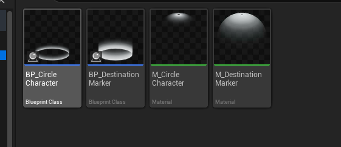
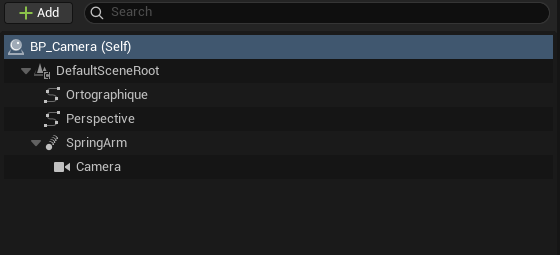
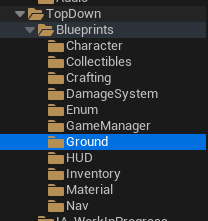

Choisir
Le joueur indique une destination avec la souris.
GAMEPLAY PROGRAMMING / UNREAL ENGINE 5 / BLUEPRINTS
Recréer les fondations d'un déplacement au clic, inspiré de Baldur's Gate 3.
Ce prototype personnel explore le click-to-move, le calcul de chemin par NavMesh, le suivi d'une trajectoire courbe construite avec une Spline et une caméra indépendante du personnage. Des systèmes simples de récolte, d'inventaire et de crafting complètent l'expérimentation.

02 / NAVIGATION
Le personnage se déplace exclusivement au clic. Après sélection d'une destination, la NavMesh calcule un chemin contournant les obstacles. Une Spline permet de produire une trajectoire courbe qui est ensuite exploitée par la logique de déplacement.
Le joueur indique une destination avec la souris.
La navigation détermine un trajet praticable.
Le personnage se déplace sur la trajectoire produite.

03 / CAMERA SYSTEMS
La caméra est gérée par un Blueprint dédié. Les touches ZQSD déplacent la caméra sans déplacer le personnage ; le suivi peut être réactivé par un bouton. Le système inclut la rotation, le zoom et une bascule entre deux perspectives.
Explorer la carte indépendamment du personnage.
Réactiver la caméra liée au personnage à la demande.
Basculer entre les modes orthographique et perspective.

04 / SYSTEMES COMPLEMENTAIRES
En complément de la navigation, j'ai expérimenté des interactions au clic avec des objets et personnages, la récolte de ressources, leur consultation dans un inventaire et un crafting basique. Il s'agit de fonctionnalités fonctionnelles mais modestes, et non d'un système RPG complet.

05 / REALISATIONS
Calcul du chemin, reconstruction de la trajectoire, échantillonnage tous les 50 cm et exploitation des positions via la logique de déplacement.
Caméra indépendante, suivi activable, rotation et zoom piloté par des Splines.
Les captures de Blueprints, les fonctions utilisées et les contraintes rencontrées sont détaillées dans l'étude technique.
Accéder à l'étude technique →06 / REGARD TECHNIQUE
Le déplacement suit correctement la trajectoire reconstruite. Le défi principal a été de faire cohabiter courbure du chemin, précision et performances.
La logique de déplacement est toutefois concentrée dans le Character Blueprint. Ce n'était pas un choix d'architecture réfléchi : avec mes connaissances actuelles, je répartirais davantage les responsabilités entre systèmes.
La page technique présente les Blueprints réels du déplacement, de la NavMesh et de la caméra.
Voir l'étude technique →